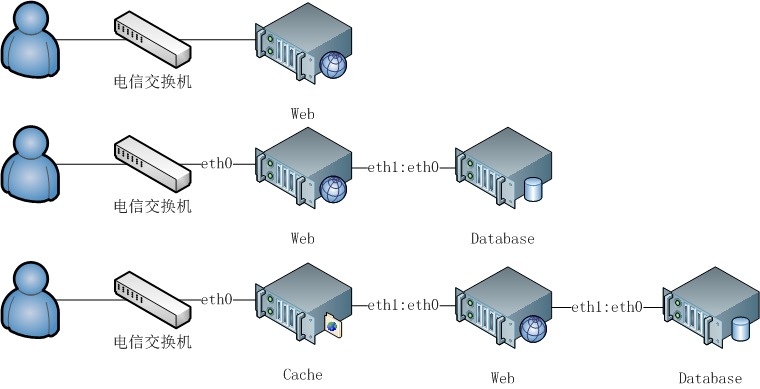

所谓大型网站主要的特点是访问量大，既海量访问，对带宽要求大，而在中国的网络环境比较复杂，单单靠一家也难保访问的快速、稳定，我们可能选择多家网络运营商，才能得到保障。
我们不得不把服务器分散部署到各地
一个IP，多台服务器流水线方式解决方案。

这种方案必须使用带有双网卡的服务器，建议选择千兆网卡，web服务器与database连接建议采用交叉线互联，不要通过Hub,Switch连接。
当web和database在同一台服务器是建议采用 UNIX SOCK 来链接数据库，以代替TCP/IP Socket。
以上图中的第三套方案为例，当用户访问网站时，通过电信交换机连接到cache服务器，有两种情况。第一种是静态html文件或图片，将判断是否被缓存，如果缓存直接反馈给用户否则链接web服务器。第二种动态脚本，将处理立即送给web服务器。如果动态脚本有请求数据库操作，将连接database服务器。
这种方式适合中小型企业，非互联网运营商，仅仅是用一个IP实现。
两个IP，多台服务器解决方案。

建议你吧图片，缩图单独使用一台服务器实现。
多个IP，多台服务器解决方案。

这种方案要注意服务器全部暴露在WAN上，一定要谨慎设置iptables规则。